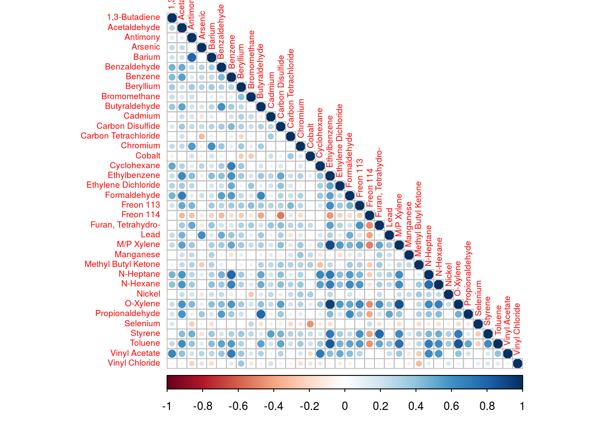
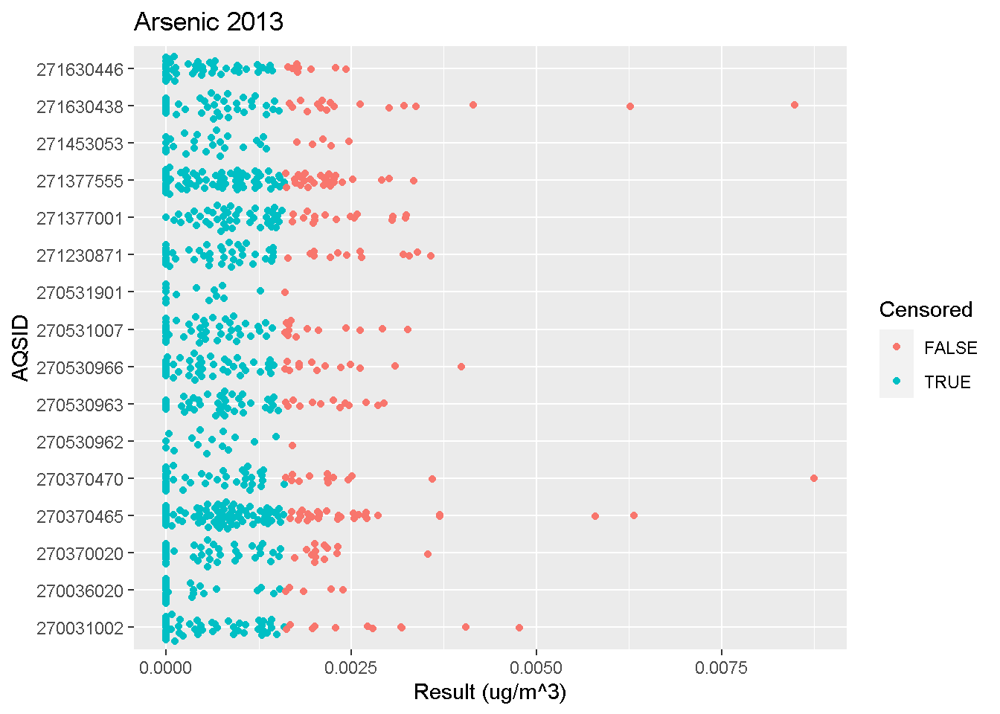
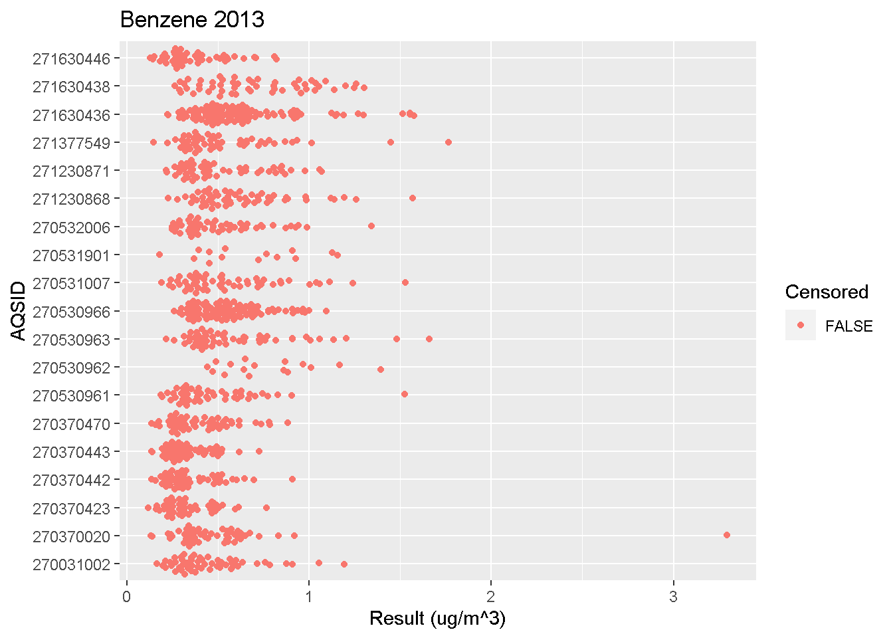
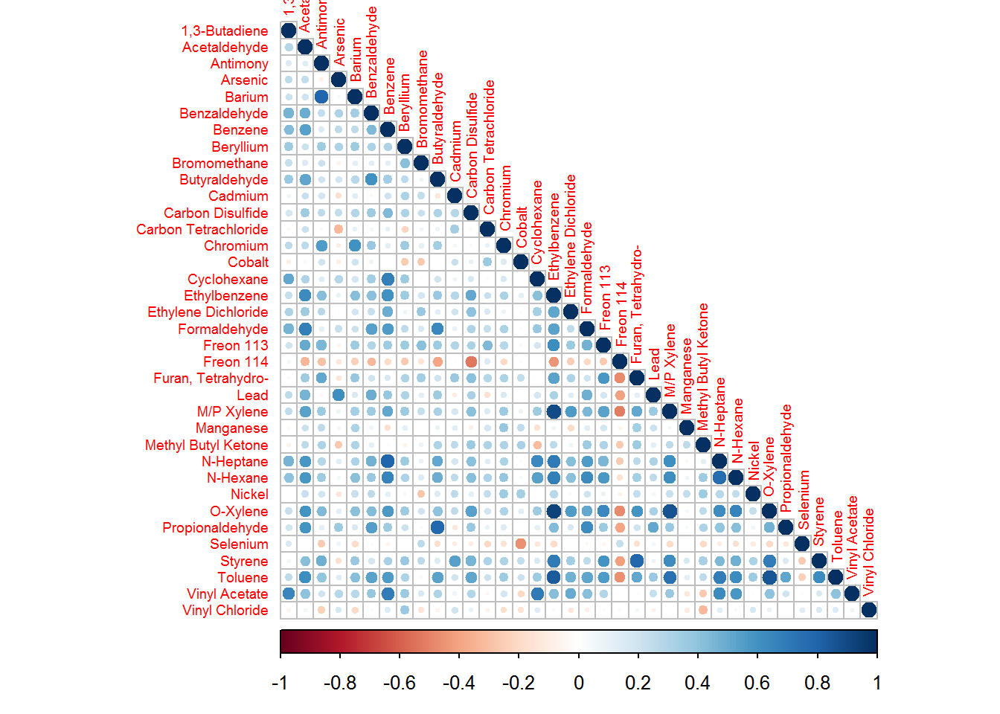

Site comparisons
Recommended steps
- Start by charting data with box and whisker plots. Some site differences may be easily apparent and will not require statistical comparisons. The analyst can use their judgement if site means are obviously different. In some cases a statistical test may not be necessary.
- Even when site means appear to be nearly identical, a statistical test should be used to confirm. Boxplots can be deceiving when trying to determine that two means are not significantly different.
- Check for normality Chi-squared test. If the data are normal, and there is equal variance complete an ANOVA to compare sites. If there are more than 2 sites, follow with a post hoc test.
- If the data are not normal, and there is not equal variance, complete a Kruskal Wallis test (or other test depending on the number of valid samples for each site). If there are more than 2 sites to compare, use Dunn’s test for post hoc site by site comparisons.
9.1 Confidence intervals
If the data are not normally distributed, use bootstraping to generate means for each site and take the differences of those means. If the lower bound of the 95% confidence interval for those differences is greater than zero, or the upper bound is less than zero, then the site means are significantly different. You cannot just generate confidence intervals for the means individually and see if they overlap since the joint probability of both means being in the same region is lower than the marginal probabilities of each mean being in the region.
It is not effective to do pairwise comparisons of individual samples due to null data and non-detects. You cannot automatically use an ANOVA test since most ambient air concentration data more closely resembles a log-normal distribution than a normal distribution and for a log-normal distribution, the variance is not independent of the mean which means that transforming the data and doing an ANOVA test would bias the confidence interval for the difference. MPCA uses bootstrap sampling to generate confidence intervals since bootstrap sampling is non-parametric and makes no assumptions about the distribution of the data or its variance.
The script below uses bootstrap sampling to generate 1,000 differences in site means which are then ordered to create a 95% confidence interval for the difference in means. If the lower bound of the interval is greater than zero, then the second site has a higher mean concentration than the first site. If the upper bound of the confidence interval is less than zero, then the second site has a lower mean concentration than the first site.
Click below to view an example calculating confidence intervals.
library(tidyverse)
library(EnvStats)
site_compare <- function(data, site_number, Boot_Repeats = 1000) {
library(EnvStats)
set.seed(2017)
annual_AT_means <- function(air_toxics) {
air_toxics <- mutate(air_toxics, Year = year(ymd(Date)), Quarter = quarter(ymd(Date)) )
sample_complete <- air_toxics %>%
group_by(AQSID, Pollutant, Year, Quarter, MDL) %>%
summarise(Complete = ( (sum(!is.na(Result) ) / length(Result) ) >= 0.75 ) ) %>%
mutate(Complete = ifelse(is.na(Complete), F, Complete) ) %>%
group_by(AQSID, Pollutant, Year, MDL) %>%
summarise(Complete = all(Complete) )
enough_detects <- air_toxics %>%
group_by(AQSID, Pollutant, Year, MDL) %>%
summarise(Detected = mean(Censored, na.rm = T) <= 0.8 )
site_means <- air_toxics %>%
group_by(AQSID, Pollutant, Year, MDL) %>%
summarise(Mean = ifelse(length(unique(Result[!is.na(Result) & !Censored] ) ) < 2, NA,
ifelse (any(Censored, na.rm = T), elnormAltCensored(Result, Censored, method = "impute.w.mle", ci = F)$parameters[[1]], mean(Result, na.rm = T) ) ) )
site_means <- left_join(site_means, sample_complete, by = c("AQSID", "Pollutant", "Year", "MDL") ) %>%
left_join(enough_detects, by = c("AQSID", "Pollutant", "Year", "MDL") ) %>%
mutate(Mean = ifelse(Complete & Detected, Mean, NA), ID = paste(AQSID, Pollutant, Year) )
return(site_means)
}
MLE_est <- function(data){
results <- data$Result
censored <- data$Censored
n <- sum(!is.na(results))
if (length(unique(results[!is.na(results) & !censored] ) ) < 2 ) {
MLE_means <- NA
}
else {
random.rows = NULL
random.rows = sample(which(!is.na(censored) & (!censored) & !duplicated(results) ), 2, replace = FALSE)
random.rows = c(random.rows, sample(which(!is.na(censored)), n-2, replace = TRUE))
MLE_means <- ifelse(sum(censored[random.rows], na.rm = T) == 0, mean(results[random.rows]), elnormAltCensored(results[random.rows], censored[random.rows], method = "impute.w.mle", ci = F)$parameters[[1]] )
}
return(MLE_means)
}
data <- mutate(data, Result = ifelse(Censored, MDL, Result), ID = paste(AQSID, Pollutant, Year))
Bootstrap_means = replicate(Boot_Repeats, (by(data, data$ID, MLE_est) ) )
Bootstrap_means = rownames_to_column(as.data.frame(Bootstrap_means), "ID" )
Bootstrap_means = right_join(annual_AT_means(data), Bootstrap_means, by = "ID")
Bootstrap_means = Bootstrap_means %>% group_by(Pollutant, Year) %>% arrange(desc(AQSID == site_number), .by_group = T ) %>%
group_by(Pollutant, Year) %>% mutate_at(vars(num_range("V", 1:Boot_Repeats)), funs(c(first(.), (. - first(.))[-1])) ) %>% ungroup()
LB = select(Bootstrap_means, num_range("V", 1:Boot_Repeats) ) %>% apply(1, function(x) sort(-x)[floor(0.025 * Boot_Repeats)] )
UB = select(Bootstrap_means, num_range("V", 1:Boot_Repeats) ) %>% apply(1, function(x) sort(-x)[ceiling(0.975 * Boot_Repeats)] )
CI = data.frame(Lower = LB, Upper = UB)
CI = bind_cols(CI, Bootstrap_means) %>% select(Lower:ID) %>% mutate(Lower = ifelse(any(AQSID == site_number & Complete & Detected) & AQSID != site_number & Complete & Detected, Lower, NA),
Upper = ifelse(any(AQSID == site_number & Complete & Detected) & AQSID != site_number & Complete & Detected, Upper, NA),
Comparison = ifelse(Lower > 0, "Higher", ifelse(Upper < 0, "Lower", "Same") ) )
return(CI)
}
data <- read_csv('https://raw.githubusercontent.com/MPCA-air/air-methods/master/airtoxics_data_2009_2013.csv')
names(data)[1:10] <- c("AQSID", "POC", "Parameter", "Date","Result",
"Null_Data_Code", "MDL", "Pollutant", "Year", "CAS")
data <- data %>%
filter(AQSID %in% c(270370020, 270370470, 271230871) ) %>%
mutate(Censored = Result < MDL)
site_number = 271230871
seed = 2017
set.seed(seed)
compare = site_compare(data, site_number, 50) #minimum 50 repeats9.2 Tools to visualize differences
Beeswarm Plots
Beeswarm plots are useful for visualizing concentrations measured at different sites with more detail than boxplots.
Click below to view an example R script.
library(tidyverse)
beeswarm_plot <- function(data, pollutant, year) {
library(dplyr)
library(ggbeeswarm)
library(ggplot2)
data <- mutate(data, AQSID = as.factor(AQSID))
filter(data, Pollutant == pollutant, Year == year) %>%
ggplot(aes(y = AQSID, x = Result, color = Censored) ) +
geom_quasirandom(groupOnX = F) +
labs(title = paste(pollutant, year), x = "Result (ug/m^3)")
}
data <- read_csv('https://raw.githubusercontent.com/MPCA-air/air-methods/master/airtoxics_data_2009_2013.csv')
names(data)[1:10] <- c("AQSID", "POC", "Param_Code", "Date","Result",
"Null_Data_Code", "MDL", "Pollutant", "Year", "CAS")
data <- mutate(data, Censored = Result < MDL)
beeswarm_plot(data, "Lead", 2013)


Correlation matrices
Correlation matrices help visualize the relationship between different pollutants at a site.
Click below to view an example R script.
correlation_plots = function(data, site) {
library(tidyverse)
library(corrplot)
data_site <- filter(data, AQSID %in% site) %>% select(Date, Pollutant, Result)
analytes <- spread(data_site, Pollutant, Result, drop = T)
analytes$Date <- NULL
coranalytes <- cor(analytes, method="kendall", use="pairwise.complete.obs") %>% as.data.frame()
coranalytes <- select_if(coranalytes, function(x) !all(is.na(x))) %>%
filter_all(any_vars(!is.na(.))) %>%
as.matrix()
rownames(coranalytes) <- colnames(coranalytes)
corrplot(coranalytes, method = "circle", type="lower", tl.cex=0.6) #plot matrix
}
data <- read_csv('https://raw.githubusercontent.com/MPCA-air/air-methods/master/airtoxics_data_2009_2013.csv')
names(data)[1:10] <- c("AQSID", "POC", "Param_Code", "Date","Result",
"Null_Data_Code", "MDL", "Pollutant", "Year", "CAS")
data %>% correlation_plots(270530962)